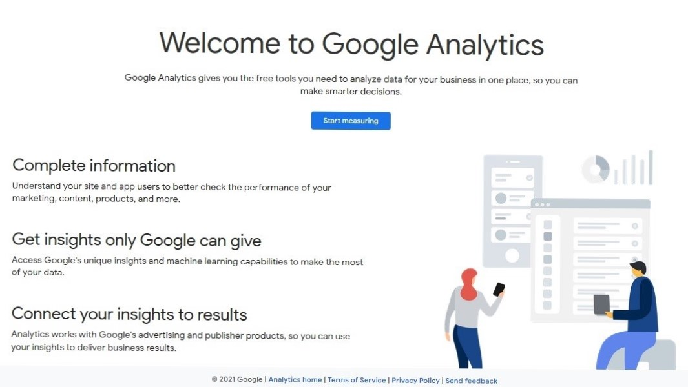
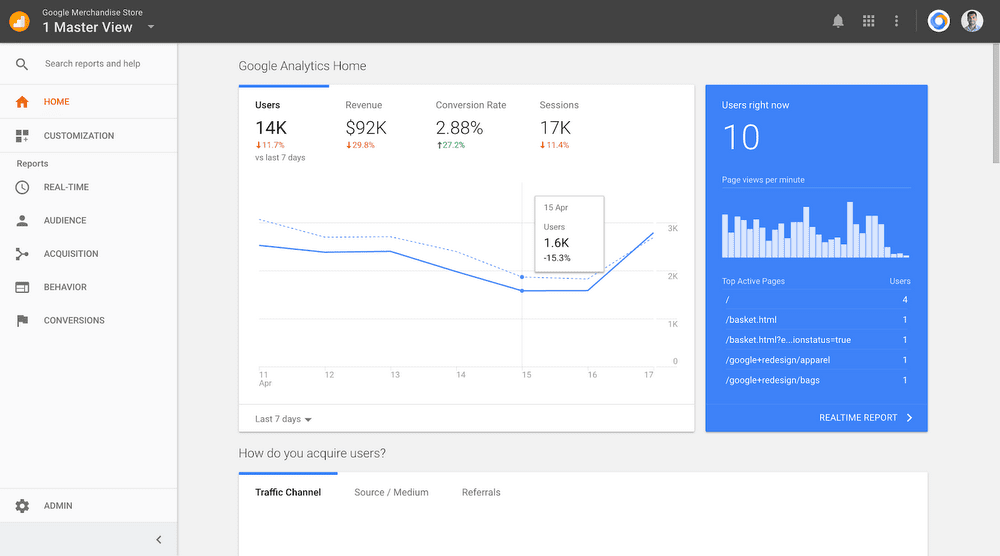
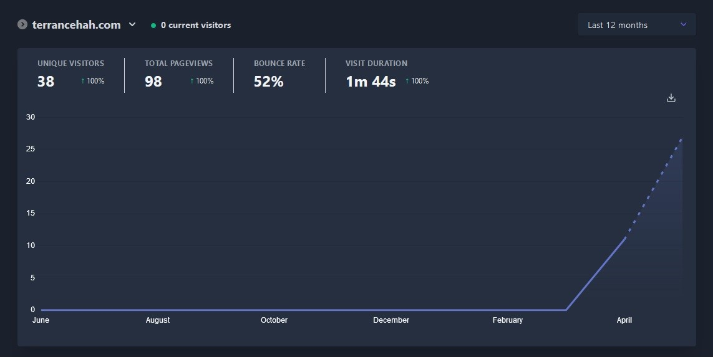

Terrance's Playground
Home Articles Projects Playground


In this article, I share my view on internet privacy, and why I don’t use Google Analytics.
When It comes to internet privacy, most people express concern about their passwords, user IDs, or credit card numbers. It is actually much more than those. Before we dive deeper into this topic, I would like to help you understand more about Google Analytics, a tool that helps website owners analyse their visitors’ data.
Google Analytics is one of the most popular analytic tools available on the web, and it is free. In short, it helps website owners to gather and analyse data of the visitors.

Google Analytics Introduction
Data such as IP address, the URL of the page, and a unique identifier (it helps Google to identify whether if you are you, without asking if you are you) are sent to Google. In return, website owners gain insights over their website traffic (the geographic regions of the visitors and type of devices being used) and user activity (page views and link clicks).

Google Analytic Home, where website owners can view insight of website's key aspects
However, it is not the website owners who need to worry. Instead, it is the website users/website visitors who should be. When a website uses Google Analytics to help analyses data, Google tracks the website visitors by storing cookies on their computers. If you have not heard of cookies, it is a tool that helps Google "remember" what a user has done on previous pages / interactions with the website.
 Screenshot of Google Privacy & Terms, which states the use of cookies to better personalize ads you see
Screenshot of Google Privacy & Terms, which states the use of cookies to better personalize ads you see
Google makes good use of the data they have, to study your behaviour, and target advertising on you better. And more than half of all websites on the web use Google Analytics. So now, it is understandable why Google Analytics is free for website owners.
I do not use Google Analytics on my website. Instead, I use Plausible Analytics as my website analytic tool. Plausible Analytics is a privacy-driven analytic tool, and it does not store cookies on your computer. Your data and privacy are protected.

Plausible Analytics which I am using right now
I pay to use Plausible Analytics, so you don't have to pay with your data and privacy.
I deeply believe that everyone should be informed on how our data will be processed. When the service is free, it is mostly possible that WE ARE THE PRODUCT. It is undeniable that companies can monetise our data when we least notice it. We all can do more to protect ourselves, but it have to start with US.